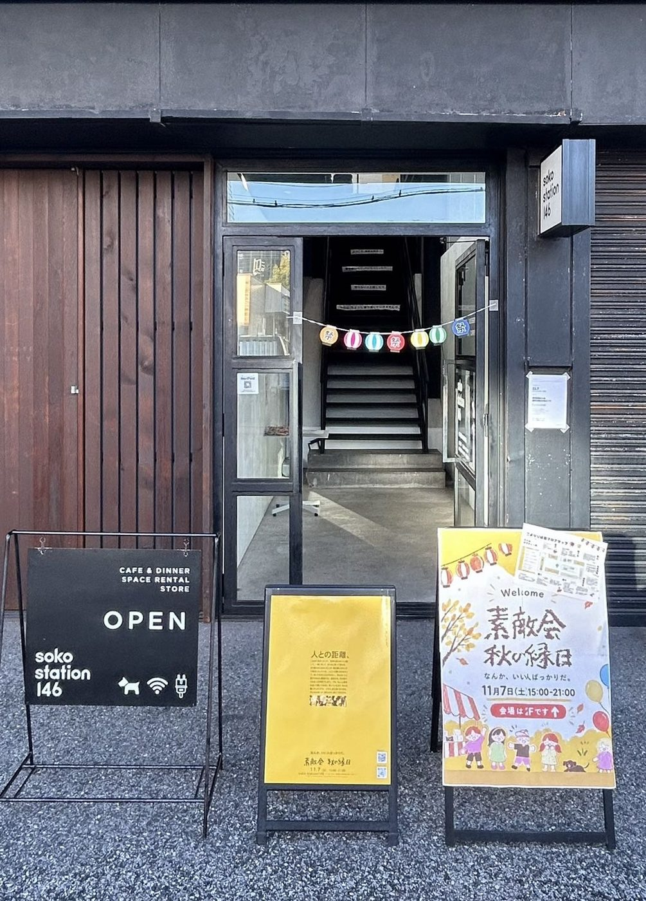
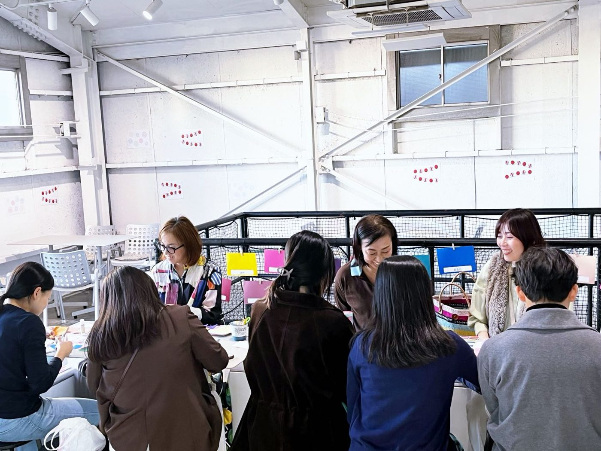
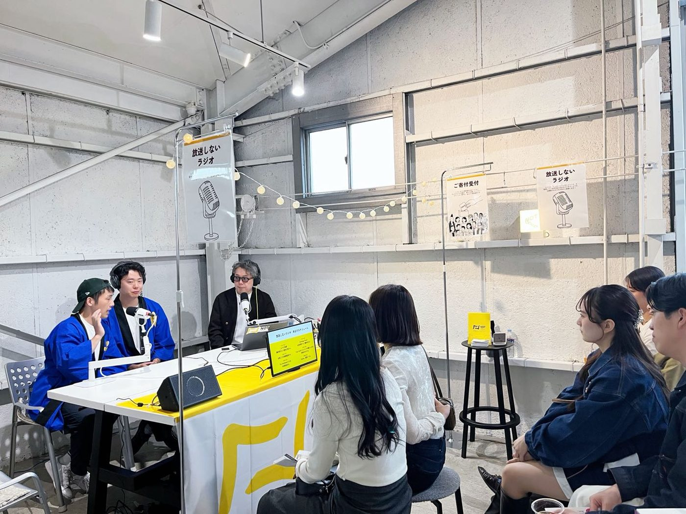
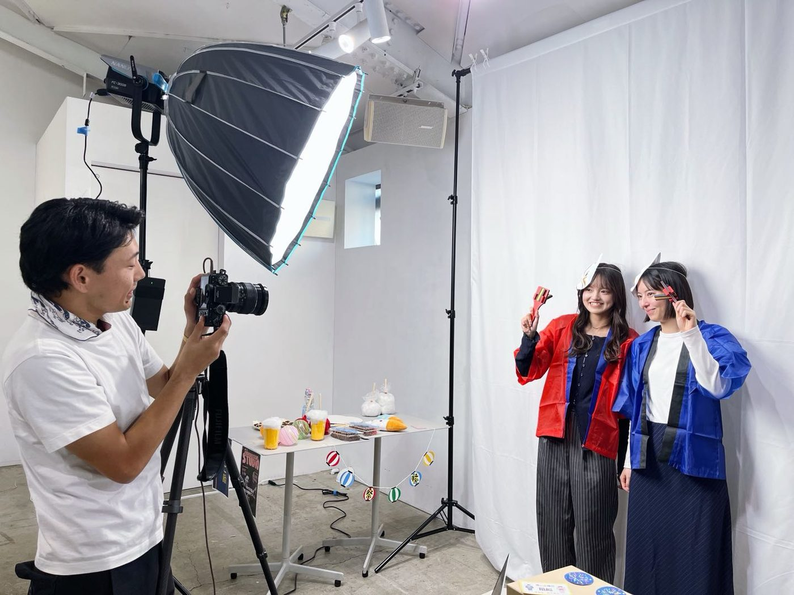
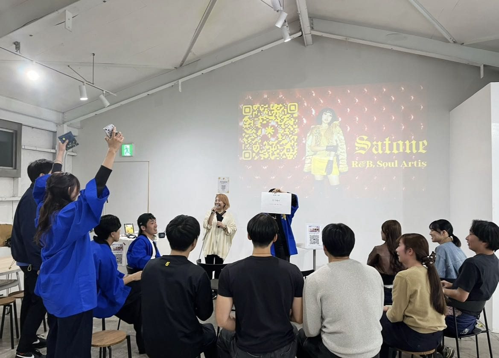

2026.11.07 SAT
会場：soko station 146（東京・新木場）／ ご来場 約100名

「こよりび 秋の縁日」を2026年11月7日（土）に開催いたしました。
ご来場いただいた約100名の皆様、そしてご出展いただきました出展者の皆様、会場をお貸しいただきましたsoko station 146様、誠にありがとうございました。楽しんでいただけたこともそうですが、何よりも怪我や事故がなく終えられたことが嬉しいです。

今回の秋の縁日ですが、テーマは「子どもには背伸びをして大人な体験を、大人には子どもに戻る体験を。」を掲げ、一般的な縁日の屋台にある「射的」や「スーパーボールすくい」、「金魚すくい」などは無く、どんな方々にとっても刺激的な体験デザインが散りばめられたブースばかりのラインナップでした。例えば、呼吸法や瞑想を行うヨガ（ヨガスタジオシュミッツの森by raftel様）や、公開収録型の放送しないラジオ（NPO法人NOT様）、色と言葉を使ったワークショップ（日本こども色彩協会様）など。




会終了後のアンケート調査では特に親子で参加された方や20代前半の参加者からの非常に満足度の高い内容となっていました。縁日で提供するアルコール類は代表藤田の出身であるサントリー様のお酒を使用させていただきました。
来年もさらにブラッシュアップした秋の縁日を開催できるよう、こよりびチーム一同精進してまいります。
改めて、みんなで創る「こよりび 秋の縁日」にお越しいただきました皆様、ありがとうございました。